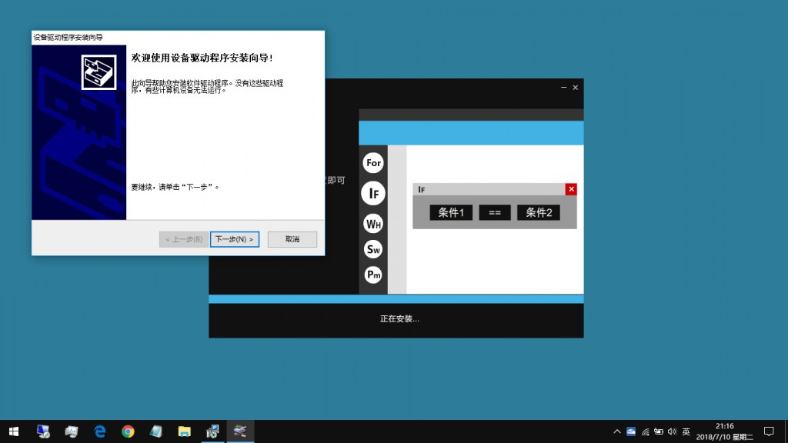
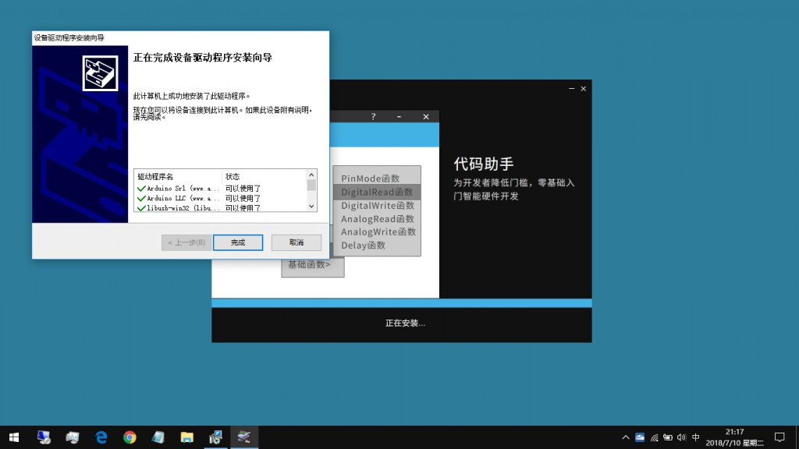
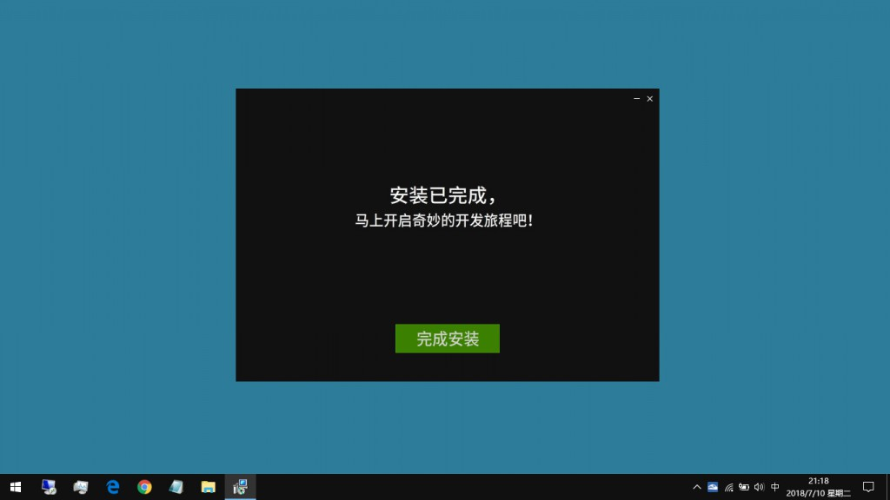
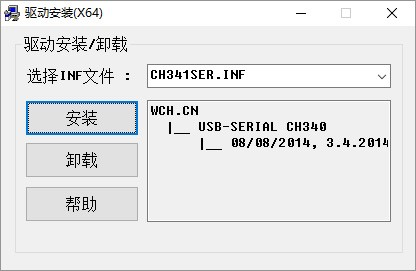

驱动程序的安装主要有两种方法，其中包括有自动方式的安装和手动方式的安装。如果您是采用我们官方提供的安装包在计算机中部署Buddy++，那么安装程序在结束的阶段将会通过脚本触发驱动程序的安装，只要按提示完成安装即可。



如果您通过绿色的方式在计算机中部署Buddy++，那么您可以在主程序完成部署后在其根目录的drivers文件夹中找到dpinst-x86.exe文件，双击运行（64位系统请选择后缀为x64的安装文件），按照提示反复下一步即可完成安装。
注意，有部分板型除了主动安装的部分在第一次连接开发板时还需要安装额外的驱动程序，例如Arduino Leonardo等支持鼠键模拟功能的控制板。当第一次把开发板连接到计算机时，系统会弹出添加新硬件的提示，一般情况下按照指示一步一步操作即可，当系统无法通过在线的方式获取驱动程序的时候，开发者需要手动指定驱动程序的路径，这时可选择Buddy++程序根目录下的drivers文件夹。
如果您使用的是非官方的Arduino控制板，我们建议您安装CH34系列芯片的驱动程序，这是大多数兼容控制板所采用的USB 总线转接芯片。

完成安装并同意相关条款后，您即可开始使用Buddy++。